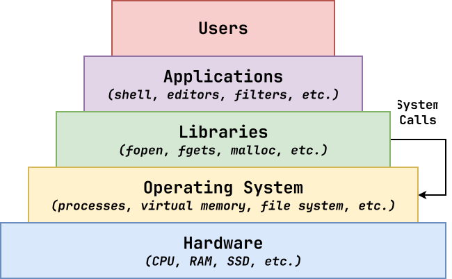
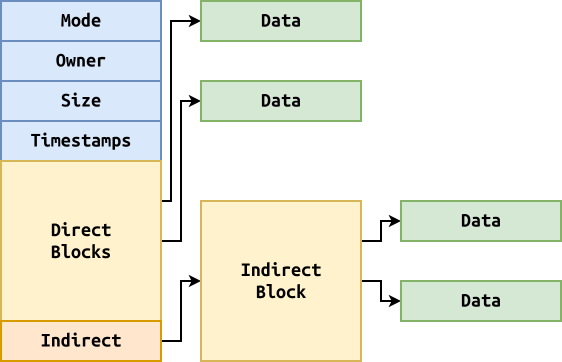

Logistics:¶
- Reading 07: due today
- Homework 07: files, system calls, OOP!
- Extra Credit 02: exams will be passed back on Wednesday
System Calls: House of Cards¶
A system call occurs when a user application requests a service, operation, or resource from the operating system kernel.

We can trace the system calls used by a
process by using strace.
$ strace ls
Review: fork, exec, wait, kill, signal for process control.
Files: OS¶
Many functions and system calls related to the file system are provided by the os library:
# Import OS library
>>> import os
# Create a path by joining directory and file name
>>> os.path.join(os.curdir, 'README.md')
'./README.md'
# Check if path exists
>>> os.path.exists('/etc/hosts')
True
Files: Inodes¶
Files are objects stored on a file system, which is usually a tree-like data structure managed by the operating system to ensure data persists.

To keep track of files, the operating system stores information about each file in an inode structure in the file system.
- Permissions
- Owner, Group
- File Size
- Links
- Timestamps
Files: Stat¶
To access the inode information for a file, we can use the os.stat function:
try:
inode = os.stat(path) # Get inode information
if stat.S_ISREG(inode.st_mode): # Check if regular file
print(f'{path} size: {inode.st_size}') # Print file size
except OSError as e:
print(e, file=sys.stderr)
To interpret some of these attributes, we can use the constants and functions from stat. That said, we can often avoid doing this manually by using the helper functions provided by Python.
Files: Test Equivalences¶
The test command is used to check the inode of a file. We can perform similar checks using Python functions:
| Test Command | Python Function |
|---|---|
| test -f | os.path.isfile(path) |
| test -d | os.path.isdir(path) |
| test -e | os.path.exists(path) |
| test -r | os.access(path, os.R_OK) |
| test -w | os.access(path, os.W_OK) |
| test -x | os.access(path, os.X_OK) |
Files: check.py (Old)¶
Write a program to check the properties of a file (ie. test).
$ ./check.py
Usage: check flag path
-e path Returns if path exists
-r path Returns if path is readable
-x path Returns if path is executable
-d path Returns if path is a directory
-f path Returns if path is a regular file
-s path Returns if path exists and has size greater than zero
#!/usr/bin/env python3
import os
import sys
# Functions
def usage(status: int=0):
print('''Usage: check flag path
-e path Returns if path exists
-r path Returns if path is readable
-x path Returns if path is executable
-d path Returns if path is a directory
-f path Returns if path is a regular file
-s path Returns if path exists and has size greater than zero
''', file=sys.stderr)
sys.exit(status)
def is_file_nonempty(path: str) -> bool:
try:
return os.path.getsize(path) > 0
except OSError:
return False
# Main Execution
def main(arguments: list[str]=sys.argv[1:]):
if len(arguments) != 2:
usage(1)
flag, path = arguments
match flag:
case '-e': sys.exit(0 if os.path.exists(path) else 1)
case '-r': sys.exit(0 if os.access(path, os.R_OK) else 1)
case '-x': sys.exit(0 if os.access(path, os.X_OK) else 1)
case '-d': sys.exit(0 if os.path.isdir(path) else 1)
case '-f': sys.exit(0 if os.path.isfile(path) else 1)
case '-s': sys.exit(0 if is_file_nonempty(path) else 1)
case _ : usage(1)
if __name__ == '__main__':
main()
Files: Path¶
In recent versions of Python, the pathlib library provides a object-oriented wrapper to many of the lower level os functions:
>>> from pathlib import Path # Load Path class from pathlib library
>>> path = Path('/etc/hosts') # Create Path instance
>>> path.name # Get path name
'hosts'
>>> path.is_file() # Check if regular file
True
>>> path.parent # Get path directory
PosixPath('/etc')
>>> path.stat().st_size # Get path size from stat structure
449
Files: check.py (New)¶
Write a program to check the properties of a file (ie. test).
$ ./check.py
Usage: check flag path
-e path Returns if path exists
-r path Returns if path is readable
-x path Returns if path is executable
-d path Returns if path is a directory
-f path Returns if path is a regular file
-s path Returns if path exists and has size greater than zero
#!/usr/bin/env python3
...
from pathlib import Path
...
def is_file_nonempty(path: Path) -> bool:
try:
return path.stat().st_size > 0
except OSError:
return False
# Main Execution
def main(arguments: list[str]=sys.argv[1:]):
...
flag = arguments[0]
path = Path(arguments[1])
match flag:
case '-e': sys.exit(0 if path.exists(path) else 1)
case '-r': sys.exit(0 if os.access(path, os.R_OK) else 1)
case '-x': sys.exit(0 if os.access(path, os.X_OK) else 1)
case '-d': sys.exit(0 if path.is_dir() else 1)
case '-f': sys.exit(0 if path.is_file() else 1)
case '-s': sys.exit(0 if is_file_nonempty(path) else 1)
case _ : usage(1)